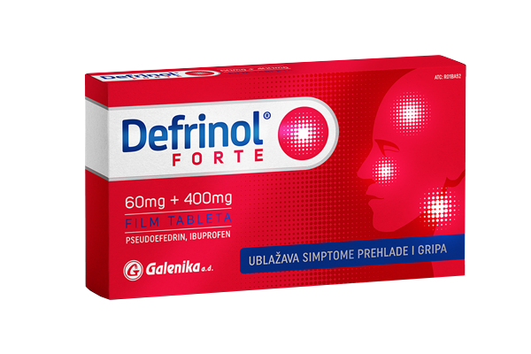
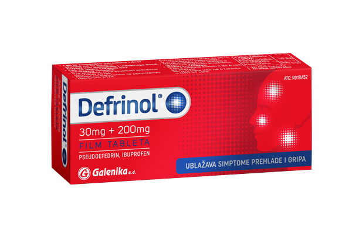

Defrinol® forte
Defrinol forte je lek koji se koristi za ublažavanje zapušenosti nosa i sinusa, glavobolje, bola, zapaljenja, povišene temperature i drugih simptoma prehlade i gripa. Tablete u sebi sadrže pseudoefedrin-hidrohlorid koji je tzv. dekongestiv koji ublažava zapušenost nosa i sinusa i ibuprofen koji spada u grupu nesteroidnih antiinflamatornih lekova i ublažava bol i glavobolju, smanjuje temperaturu i znakove zapaljenja. Defrinol forte se primenjuje kod odraslih i dece starije od 12 godina
Ibuprofen (400 mg)
Ibuprofen je nesteroidni antiinflamatorni lek (NSAIL) koji smanjuje bol, snižava povišenu telesnu temperaturu i uklanja znake zapaljenjskog procesa.
Pseudoefedrin (60 mg)
Pseudoefedrin-hidrohlorid je lek koji dovodi do sužavanja krvnih sudova (vazokonstrikcija) u sluznici nosa i na taj način omogućava bolju prohodnost disajnih puteva.
Defrinol®
DEFRINOL je lek koji pripada grupi nazalnih dekongestiva i predstavlja kombinaciju pseudoefedrin- hidrohlorida i ibuprofena.
DEFRINOL se koristi za ublažavanje simptoma prehlade i gripa kao što su bolovi u mišićima, glavobolja, bol u grlu, povišena telesna temperatura, začepljenost nosa i sinusa.
Ibuprofen (200 mg)
Ibuprofen je nesteroidni antiinflamatorni lek (NSAIL) koji smanjuje bol, snižava povišenu telesnu temperaturu i uklanja znake zapaljenjskog procesa.
Pseudoefedrin (30 mg)
Pseudoefedrin-hidrohlorid je lek koji dovodi do sužavanja krvnih sudova (vazokonstrikcija) u sluznici nosa i na taj način omogućava bolju prohodnost disajnih puteva.
Defrinol® sirup
Lek Defrinol sadrži dve aktivne supstance pseudoefedrin-hidrohlorid i ibuprofen, i pripada grupi nazalnih dekongestiva za sistemsku primenu. Pseudoefedrin-hidrohlorid je dekongestiv koji ublažava kongestiju (zapušenost) nosa i sinusa, a ibuprofen je lek koji spada u grupu nesteroidnih antiinflamatornih lekova i ublažava bol, smanjuje temperaturu i znakove zapaljenja.
Defrinol je lek koji se koristi za ublažavanje simptoma prehlade i gripa praćenih kongestijom nosa i sinusa, uključujući bolove u mišićima, glavobolju, bol u grlu, povišenu telesnu temperaturu.
Koristite ovaj lek samo ukoliko imate zapušen nos i sinuse, praćeno glavoboljom, bolovima i/ili groznicom. Ne uzimajte ovaj lek ukoliko imate samo jedan od ovih simptoma.
Ibuprofen (100 mg/5 ml)
Ibuprofen je nesteroidni antiinflamatorni lek (NSAIL) koji smanjuje bol, snižava povišenu telesnu temperaturu i uklanja znake zapaljenjskog procesa.
Pseudoefedrin (30 mg/5 mL)
Pseudoefedrin-hidrohlorid je lek koji dovodi do sužavanja krvnih sudova (vazokonstrikcija) u sluznici nosa i na taj način omogućava bolju prohodnost disajnih puteva.

| Defrinol forte | Defrinol | Defrinol sirup | |
| Ibuprofen | 400 mg | 200 mg | 100 mg/5 ml |
| Pseudoefedrin | 60 mg | 30 mg | 30 mg/5 ml |
| Farmaceutski oblik | film tableta | film tableta | sirup |
| Uzrast | od 12 godina | od 12 godina | od 6 godina |